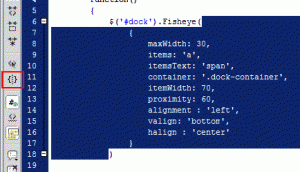
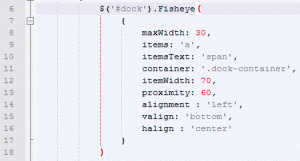
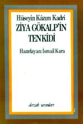
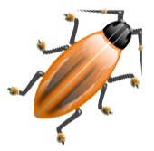

Yaklaşık 3-4 senedir css ile web sayfası kodluyorum. CSS ile web sayfası kodlarken en çok sorun çıkaran konulardan biri farklı tarayıcılar için kod yazmaktır. CSS hileleri ile geçiştirdiğimiz bu farklı tarayıcılara göre kod yazma işi bize aslında CSS ile sayfa kodlama imkanı sunması bakımından önemlidir. Eğer CSS hileleri olması idi ...
devamını okuFireBug İpucu : FireBug'ın Yetenekleri
FireBug ile ilgili bir makale yazacağım ama bugün internette gezerken bir makaleye(50’den fazla doku kaynağı ile ilgili olan) bakıyordum birden aklıma yau benim sitenin ardalanına bunlardan hangisi uygun kaçar diye düşünmeye başladım. Sonra düşünmekten daha kolay bir yolunu buldum.
Aslında bir yazı olacak bir konu değil ama FireBug ...
devamını okuFirefox 3.1 Yenilikleri
Firefox 3.1 Beta1 çıktı. Aslında sadece bir haber değeri taşıyan bir bilgi, ancak Firefox 3.1 ile birlikte bir çok sevindirici gelişmeler getirdiği için dikkate değer bir yenileme. Bir ara sürüm değilde sanki yeni bir sürüm gibi. Yeni özelliklere bir göz atalım.
Geolocation
Geode internet tarayıcıları için yeni kavram ...
devamını okuSitemi temizleme ve hızlandırma çalışmalarım
Siteyi yeniledikten sonra daha önce eğilmediğim bazı konulara eğilmeye başladım. Siteyi daha hızlı hale nasıl getirebilirim diye araştırdım. Tam olarak bir karar veremesem de cach ile ilgili bir eklenti kurmayı düşünüyordum. Muhammet Sevim’in önerisi üzerine wp-Cache eklentisini kurdum. Ayrıca eklentileri kurunca veritabanına bir sürü tablo atıyor Wordpress, bunun yanında ...
devamını okuJavascript'te Parantez Takibi
Javascript ve jquery ile program yazarken en çok parantezleri nerede açıp kapadığımız önem kazanıyor. Çoğu zaman parantez takibi yapmak zorunda kalıyoruz.

Dreamweaver’ın “Balancing Braces” özelliği sayesinde parantez takibi kolaylaşıyor. Fonksiyonun nereden başlayıp nerede bittiğini görmek gerekiyor. Bu özellik bize parantez takibi sağlıyor.

Güzel bir özellik olsa da NotePad ++’ ın ...
devamını okuZiya Gökalp'in Tenkidi - Hüseyin Kazım Kadri

Ziya Gökalp'in fikirleri Osmanlı'nın son zamanlarını ve Cumhuriyet Türkiye'sini etkiledi. Fransız ihtilalinin etkisi ile dünyada yayılan milliyetçilik akımına katılan Ziya Gökalp ve fikirleri birçok kişiyi etkilemiştir. Bu fikirlerin olumsuz yanlarını ve eksilerini anlatan birçok yazı yazıldı. Hüseyin Kazım Kadri'nin bu kitabıda aynı devirde yazılmış ciddi bir ...
devamını okuSiteyi yeniledim.
 Fatih Hayrioğlu’nun not defteri - Sürüm 2.0
Fatih Hayrioğlu’nun not defteri - Sürüm 2.0- Yeni sürümün en büyük değişim daha önce kendi bünyemde barındırdığım bir çok hizmeti işin erbabına bırakarak oldu. Örneğim haberleri delicous'a, aramayı google'a, lifestream'i friendfeed'e. Böylelikle sitem daha hızlı ve işlevsel oldu.
- Tasarım olarak minimalistik bir tasarım seçtim. Daha ...
Arama
Adobe Creative Suite 4 çıktı
Adobe Creative Suite 4 benim açımdan sadece Dreamweaver önemli. Dreamweaver yenilikleri ümit verici. Sabırsızlanıyorum. Daha önce bahsetmiştik. Adobe Macromedia Dreamweaver CS4 Beta Ayrıca Adobe Türkçe'de güzel bilgiler var. Ayrıntılı bilgi için tıklayınız. Ayrıca Photoshop mu Fireworks mu? kararınıda vermek gerekecek. Alışkanlıklar kolay bırakılmadığı için Photoshop ile devam edecek gibiyiz.
devamını okuFireBug 1.2 ve yenilikleri
Daha önce FireBug'ın genel özelliklerinden bahsettik. Sıra FreiBug ile CSS ve Xhtml yazmaya gelmişti ki yeni sürüm çıkınca bu makaleyi yazma ihtiyacı duydum.
Web kod yazarları için büyük kolaylık sağlayan FireBug'ın yeni sürüm çıktı ama kimseden ses çıkmadı. Belkide Google Chrome duyurusunun altında ezildi. Ama Google Chrome'un ...
devamını oku